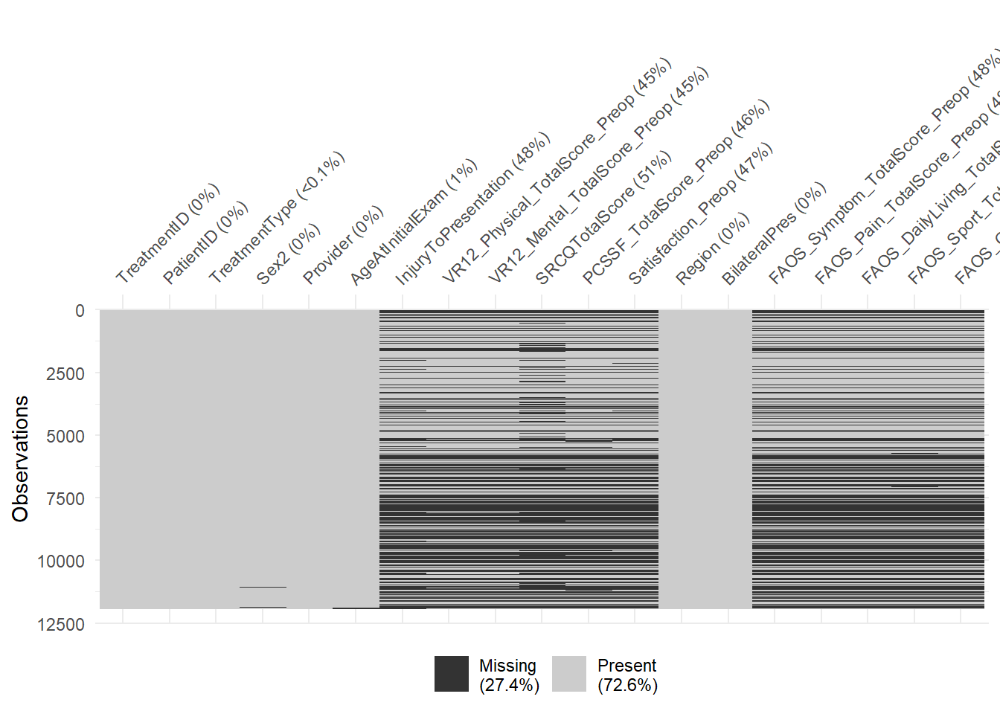
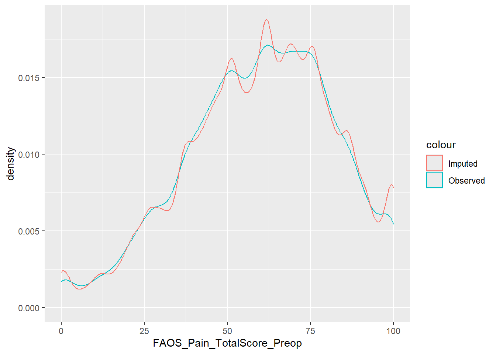
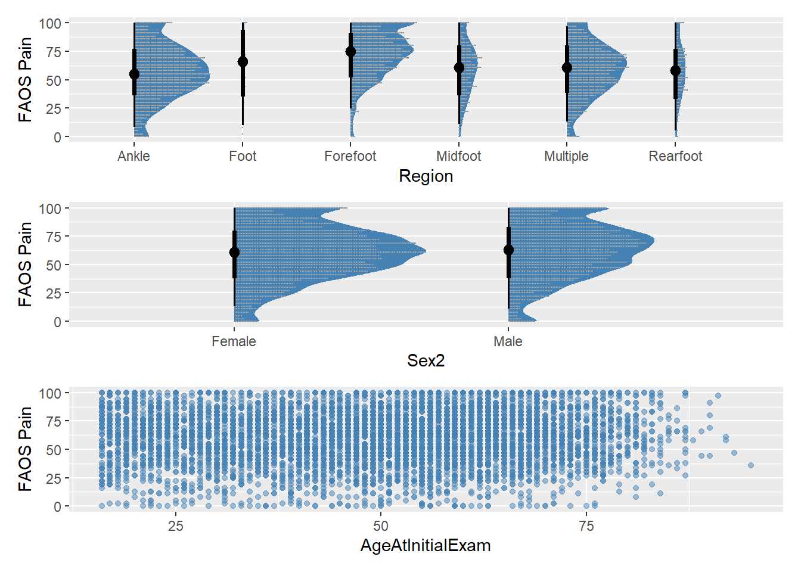

Pain and function at baseline assessment of foot and ankle pathology: An analysis of the SOFARI Registry
Author
Corey Scholes
Published
August 11, 2025
Modified
August 11, 2025
1 Analysis Preamble
This analysis is to replicate a study describing the distribution of pain catastrophizing in patients presenting for surgical review of hip pathology (hampton2019?).
1.1 Reporting
The study was reported according to the RECORD guidelines (Benchimol2015?) and companion checklist.
The analysis was conducted in RStudio IDE (RStudio 2024.12.0+467 “Kousa Dogwood” Release) using Rbase(base?), quarto(quarto?) and attached packages to perform the following;
Data import and preparation
Sample selection
Describe and address missingness
Data manipulation, modelling and visualisation of;
Patient characteristics
Pathology characteristics (diagnosis)
Patient reported outcomes
1.2 Preparation
Load up required packages in advance. Citations are applied to each library at first use in the text.
Code
if (!require("pacman")) install.packages("pacman")pacman::p_load("patchwork","car","corrplot","knitr","cardx","quarto","pROC","reshape","future","furrr","memoise","gargle","googledrive","googlesheets4","openxlsx2","readr","purrr","tidyverse","tidymodels","tidytext","stopwords","tictoc","lubridate","forcats","gt","consort","gtsummary","flextable","survival","ggplot2","ggdist","ggsurvfit","ggfortify","mice","marginaleffects","patchwork","naniar","quantreg","broom","broom.helpers","labelled","epoxy","broom.mixed","lme4","janitor","progressr","DT",install =TRUE,update =FALSE)
Pre-authorise access to registry datasets using the gargle package (v1.5.2) (gargle?).
1.4 Functions for Processing
Include a series of functions to call later in the file for processing data imports.
Function to retrieve files, using googledrive package(v2.1.1) (googledrive?).
Code
get_latest_snapshot <-function(base_folder_id = base_folder_id1) {tryCatch({# List all folders in the base directory folders <- googledrive::drive_ls(as_id(base_folder_id), pattern ="^\\d{8}$")if(nrow(folders) ==0) {stop("No dated folders found") }# Sort folders by name (date) in descending order latest_folder <- folders[order(folders$name, decreasing =TRUE),][1,]# Find the snapshot file in the latest folder snapshot_file <- googledrive::drive_ls( latest_folder$id, pattern ="Registry data snapshot\\.xlsx$" )if(nrow(snapshot_file) ==0) {stop("No snapshot file found in latest folder") }# Return both pieces of information as a listreturn(list(snapshot = snapshot_file,folder_name = latest_folder$name )) }, error =function(e) {stop(paste("Error finding latest snapshot:", e$message)) })}
A general text cleaning function was constructed to apply during first import of raw data files, built on tidyverse (v2.0.0) (tidyverse-2?) and stringr (v1.5.1) (stringr-2?). The janitor package (v2.2.1) (janitor?) was utilised to clean column names in the resulting dataframe.
bind_and_clean <-function(df1, df2, cols =NULL, clean_cols =NULL, clean_fn = clean_text) {# Store the names of the input dataframes df1_name <-deparse(substitute(df1)) df2_name <-deparse(substitute(df2))# Bind rows result <-bind_rows(df1, df2)# If cols is specified, select those columns, otherwise keep all columnsif (!is.null(cols)) { result <- result |> dplyr::select(all_of(cols)) }# Apply text cleaning to specified columnsif (!is.null(clean_cols)) {for (col in clean_cols) {if (col %in%names(result)) { result[[col]] <-clean_fn(result[[col]]) } else {warning(glue::glue("Column '{col}' not found in dataframe")) } } }# Remove the input dataframes from the parent environmentrm(list =c(df1_name, df2_name), envir =parent.frame())# Clean column names for consistency result |> janitor::clean_names(case ="big_camel" )}
1.4.1 Diagnosis
Include a series of functions for calling later in the file to process sub-phases of converting clinical text stored in the registry to categories of pathology affecting the foot and ankle. The functions were built on tidyverse and stringr packages to manipulate data, future (v1.67.0) (future?) and furrr (v0.3.1) (furrr?) to enable distributed processing of the records. The progressr package (v0.15.1) (progressr?) was utlised to enable visual progress to be communicated during processing and memoise (v2.0.1) (memoise?)to cache processing results from batches of subsets of the registry dataset to enable distributed processing.
Code
# Enable parallel processingfuture::plan(multisession)# Configure progress reportingprogressr::handlers("progress")# Create a shared cache (in memory or filesystem)shared_cache <- memoise::cache_memory()# Memoize the target terms loading to match original formatload_target_terms <- memoise::memoise(function(sheet_url, sheet_name ="DiagTerm", range ="A1:C") { terms <- googlesheets4::range_read(ss = sheet_url,sheet = sheet_name,range = range,col_names =TRUE,trim_ws =TRUE ) |>mutate(TargetTerm =paste0("\\b", stringr::str_escape(Term), "\\b"))list(terms = terms,pattern =str_c(terms$TargetTerm, collapse ="|") )})# Target-Replacement Functioncreate_replace_function <-function(target_terms_df) {function(string) {# Find the matched term in target_terms_df match <-filter(target_terms_df, Term == string)# Check if a match is foundif (nrow(match) ==1) {return(match$ReplaceTerm) } else {# Return the original string if no match is foundreturn(string) } }}clean_diagnosis_text <- memoise::memoise (function(df) { df |> dplyr::select(TreatmentID, DiagnosisRawFinal, DiagnosisRawPrelim) |> tidyr::unite("DiagnosisRaw", c(DiagnosisRawFinal, DiagnosisRawPrelim), na.rm =TRUE, remove =FALSE, sep ="; ") |>filter(stringr::str_count(str_to_lower(DiagnosisRaw), "") >1) |>mutate(DiagnosisRaw = stringr::str_squish(DiagnosisRaw),DiagnosisRaw = stringr::str_replace_all(DiagnosisRaw, "\\.|\\. |\\: |\\, |w\\/", ";"),DiagnosisRaw = stringr::str_replace_all(DiagnosisRaw, "\\#", "fracture"),DiagnosisRaw = stringr::str_replace_all(DiagnosisRaw, ";+", ";"),DiagnosisRaw = stringr::str_trim(stringr::str_remove_all(DiagnosisRaw, "^;|;$")) )})# Modified process_batch1 to maintain sequence integrityprocess_batch1 <-function(batch_df) { batch_df |>mutate(DiagnosisRaw1 = stringr::str_replace_all(str_to_lower(DiagnosisRaw), "\\bwith\\b|\\band\\b|\\bas well as\\b", ";" ),DiagnosisRaw1 = stringr::str_replace_all(DiagnosisRaw1, "\\s+", " "),DiagnosisRaw1 = stringr::str_trim(DiagnosisRaw1) ) |> tidyr::separate_rows(DiagnosisRaw1, sep =";") |>mutate(DiagnosisRaw1 = stringr::str_trim(DiagnosisRaw1),# Add row identifier before unnestingSequenceID =row_number() ) |>filter(nchar(DiagnosisRaw1) >0) |> tidytext::unnest_tokens(output = Term,input = DiagnosisRaw1,token ="regex",pattern ="\\s+",format ="text",to_lower =TRUE,drop =FALSE ) |>anti_join(stop_words, by =c("Term"="word")) |>mutate(TermLength = stringr::str_length(Term),# Maintain original ordering within each diagnosisterm_sequence =row_number() ) |>group_by(TreatmentID, SequenceID) |>mutate(term_count =n(),term_position =row_number() ) |>ungroup()}# Modified process_batch2 to preserve sequence informationprocess_batch2 <-function(batch_df, target_terms) { replace_function <-create_replace_function(target_terms$terms) batch_df |>mutate(Term1 = stringr::str_replace_all(Term, target_terms$pattern, replace_function) ) |>filter( stringr::str_detect( Term1, "\\d+(?!(?:st|nd|rd|th)\\b)|(left|right)", negate =TRUE ) ) |># Preserve grouping and sequencearrange(TreatmentID, SequenceID, term_position)}# Modified tokenize_diagnosis to handle sequence preservationtokenize_diagnosis <- memoise::memoise(function(df, stop_words =NULL, batch_size =500, process_batch) {if (is.null(stop_words)) { stop_words <- tidytext::get_stopwords() }if (missing(process_batch)) {stop("You must provide a process_batch function.") }# Add global identifier before splitting df <- df |>mutate(global_id =row_number())# Split the data into batches df_split <-split(df, ceiling(seq_len(nrow(df)) / batch_size))# Process batches while maintaining order furrr::future_map_dfr(df_split, process_batch, .progress =TRUE) |>arrange(global_id, term_position)})
Code
# Term replacement logicapply_target_terms <- memoise::memoise(function(df, target_terms, batch_size =500, process_batch) {# Ensure `process_batch` is providedif (missing(process_batch)) {stop("You must provide a process_batch function.") }# Split the data into batches df_split <-split(df, ceiling(seq_len(nrow(df)) / batch_size))# Process each batch using the provided `process_batch` function furrr::future_map_dfr(df_split, ~process_batch(.x, target_terms), .progress =TRUE)})
Code
# Function to safely process diagnosissafe_process_diagnosis <-function( snapshot_df, target_terms_url,stop_words =NULL,batch_size =1000,tokenize_batch = process_batch1,term_batch = process_batch2,workers =4 ) { # Add workers parameter# Set up parallel processing old_plan <-plan(multisession, workers = workers)on.exit(plan(old_plan), add =TRUE) # Ensure we reset the plan when done# Set up progress handlinghandlers("progress")tryCatch({with_progress({ p <-progressor(steps =4)# Load target termsp(message ="Loading target terms...") terms_data <-load_target_terms(target_terms_url)# Process the diagnosis data with progress updatesp(message ="Cleaning text...") cleaned_data <-clean_diagnosis_text(snapshot_df)# Ensure stop_words is availableif (is.null(stop_words)) { stop_words <- tidytext::get_stopwords() }# Create the tokenize batch function closure tokenize_batch_fn <-function(batch_df) {process_batch1(batch_df) }environment(tokenize_batch_fn)$stop_words <- stop_wordsp(message ="Tokenizing diagnosis...") tokenized_data <-tokenize_diagnosis(df = cleaned_data, stop_words = stop_words,batch_size = batch_size,process_batch = tokenize_batch_fn )p(message ="Applying target terms...") processed_data <-apply_target_terms(df = tokenized_data, target_terms = terms_data,batch_size = batch_size,process_batch = term_batch ) processed_data }) }, error =function(e) {message("Error in processing: ", e$message)# Clean up any remaining connections or resources future:::ClusterRegistry("stop")stop(e) })}
Function to conduct categorisation of terms for pathology (diagnosis) stored in the registry.
Code
#' Categorize medical diagnoses with anatomical and pathological classifications#' @param df A dataframe containing Term2 columns#' @param remove_intermediate Logical, whether to remove intermediate processing columns#' @param use_parallel Logical, whether to use parallel processing for large datasets#' @param chunk_size Integer, number of rows to process in each parallel chunk#' @return A dataframe with new classification columns based on Term2 pattern matchingcategorize_diagnosis <-function( df,remove_intermediate =TRUE,use_parallel =FALSE,chunk_size =1000 ) {# Input validation with more detailed error message required_cols <-c("Term2")if(!all(required_cols %in%names(df))) {stop("Missing required column 'Term2'. Available columns are: ", paste(names(df), collapse =", ")) }# Ensure df is a data.frame df <-as.data.frame(df)# Main processing function process_chunk <-function(chunk_df) {# Ensure required packages are loaded in parallel contextrequire(dplyr)require(stringr)# Convert chunk to data.frame to ensure consistent behavior chunk_df <-as.data.frame(chunk_df) chunk_df |># Extract diagnosis sidemutate(# Anatomical classificationsAnkle =if_else(str_detect(chunk_df$Term2, "ankle|tibiotalar|\\bplafond\\b|dome|malleol*|weber|achilles|tendo-achilles|fibula|\\btibia\\b|gutter|perone*|syndesmo|gastrocnemius|talo-fibular|talofibular|calcaneofibular|calcaneo-fibular|gutter|(lateral|medial)\\s+ligament|tibia|deltoid|compartment.+syndrome") &str_detect(chunk_df$Term2,"(lateral|medial)\\s+collateral\\s+ligament", negate =TRUE),1,0),Rearfoot =if_else(str_detect(chunk_df$Term2, "\\btarsal\\b|\\btalar(?!\\s+dome)|talus|talonavic*|plantar|rearfoot|hindfoot|trigonum|hindfeet|tarsi|calcaneus|\\bcalcaneal\\b|heel|subtalar"),1,0),Midfoot =if_else(str_detect(chunk_df$Term2, "metatarsus|tarsometatarsal|tarso-metatarsal|\\bmetatarsal\\b|talonavicular|navicular|cuneiform|lisfranc|cuboid|midfoot|jones|chopart"),1,0),Forefoot =if_else(str_detect(chunk_df$Term2, "digit*|morton*|metatarsophalangeal|phalange*|phalanx|hallux|nail|forefoot|forefeet|bunionette|hallucis|onychomycosis|paronychia|bunion|hammertoe|claw|sesamoid"),1,0),Foot =if_else(str_detect(chunk_df$Term2, "\\bfeet\\b|\\bfoot\\b|cavovarus|equinovarus|equinus|pes|charcot|footdrop|neuropathy"),1,0) ) |># Pathological classificationsmutate(Arthritis =if_else(str_detect(chunk_df$Term2, "psoria|arthritis|osteoarthritis|rheumatoid|gout|erosion|arthropathy"),1,0),Injury =if_else(str_detect(chunk_df$Term2, "injury|injuries|axial|impact|crush|rotation|inversion|forced|accident|tear|torn|ruptur|avulsion|fracture|defect|(osteochondral|chondral|cartilage).+lesion|sprain|haemarthrosis|disruption|wound|laceration|penetrating|hernia|maisonneuve"), 1, 0),Deformity =if_else(str_detect(chunk_df$Term2, "malalignment|deformit|angulation|contracture|contraction|\\bvalgus\\b|varus|planovalgus|valgoplanus|dysfunction|extension|adductus|crossover|hammer|claw|bunionette|bunion|interphalangeus|(relatively|significantly).+long|relative.+long"),1,0),Metatarsalgia =if_else(str_detect(chunk_df$Term2, "metatarsalgia|forefoot.+overload"),1,0),SoftTissueDisorder =if_else(str_detect(chunk_df$Term2, "tenosynovitis|enthesopathy|teno-synovitis|tendinopathy|tendinitis|tendonitis|tendinosis|fasciosis|fasciitis|sesamoiditis|arthrofibro|scar|tibialis posterior.+dysfunction|dysfunction tibialis posterior"),1,0),Growth =if_else(str_detect(chunk_df$Term2, "cyst|ganglion|neuroma|malformation|fibroma|tumour|accessory|ingrown|in_grown|coalition|(?<!(?:chondral|osteochondral|cartilage)\\s)\\blesion\\b|xanthomas|osteoma|gioma|schwannoma|chondroma|lump|villonodular|callosity|corn|mass|\\b(non|mal|delayed)[-]?union|pseudo-articulation|bone.+loss|exostosis|spur|osteophyte|onychogryphosis|bipartite|neuroma|chondromatosis"), 1, 0),Neural =if_else(str_detect(chunk_df$Term2, "foot.+drop|footdrop|nerve|neuropathy|neural|sensory|charcot|motor|pain.+syndrome|tunnel.+syndrome|neuropathic|denervation"),1,0),Infection =if_else(str_detect(chunk_df$Term2, "infect|osteomyelitis|cellulitis|onychomycosis|ulcer|paronychia"),1,0),Impingement =if_else(str_detect(chunk_df$Term2, "impingement|stiffness|os.+trigonum"),1,0),Instability =if_else(str_detect(chunk_df$Term2, "disloc|unstable|sublux|instability|talar.+shift|widening|maisonneuve"),1,0) ) |># Final classificationsmutate(Other =if_else(rowSums(across(c(Arthritis:Instability))) <1|str_detect(chunk_df$Term2,"foreign.+(body|material)"),1,0),NegatePathology =if_else(str_detect(chunk_df$Term2, "(?<!ab?)normal|(?<!(non|mal)-?)|nil.+pathology|\\bheal\\b|reduced|non-tender|unremarkable"),0,1) ) }# Process data based on parallel preferenceif (use_parallel &&nrow(df) > chunk_size) {# Ensure required packages are loaded in main sessionrequire(future)require(furrr)# Set up parallel processingplan(multisession)# Create chunks with explicit data.frame conversion chunks <-split(df, ceiling(seq_len(nrow(df))/chunk_size)) chunks <-lapply(chunks, as.data.frame)# Process chunks in parallel df_processed <-future_map_dfr(chunks, process_chunk, .progress =TRUE) } else { df_processed <-process_chunk(df) }return(df_processed)}# Create cached versioncategorize_diagnosis_cached <- memoise::memoise(categorize_diagnosis)
Concatenated terms for each treatment record using tidyverse syntax. Generated a method to cumulatively concatenate terms within a treatment record that have been split into text sequences delimited by punctuation (e.g. “;”).
Code
concatenate_diagnoses <-function(data) {# Sort the data by TreatmentID and SequenceRow in descending order data %>%arrange(TreatmentID, desc(SequenceRow)) %>%group_by(TreatmentID) %>%mutate(CumulativeTerm =accumulate(Term2, .f =function(x, y) {if (is.na(x)) y elsepaste(y, x, sep ="; ") }) %>%last() ) %>%ungroup()}
Code
concatenate_cumulative <-function(SequenceRow, ProductCuml, Term2) {# Create a dataframe to help with tracking df <-data.frame(SequenceRow = SequenceRow, ProductCuml = ProductCuml, Term2 = Term2,stringsAsFactors =FALSE )# Sort by SequenceRow to ensure correct processing df <- df[order(df$SequenceRow), ]# Initialize result vector result <-character(length(SequenceRow))# Use accumulate to build up the terms accumulated_result <- purrr::accumulate(1:nrow(df), .init =list(accumulated_terms =character(),last_classified_term =NA_character_ ),function(acc, i) {# Current row details current_term <- df$Term2[i] current_product_cuml <- df$ProductCuml[i]# If current row is classified (ProductCuml >= 1)if (current_product_cuml >=1) {# Concatenate all accumulated terms with current termif (length(acc$accumulated_terms) >0) { combined_term <-str_c(str_c(acc$accumulated_terms, collapse ="; "), current_term, sep ="; " ) } else { combined_term <- current_term }# Return updated statelist(accumulated_terms =character(),last_classified_term = combined_term ) } else {# Accumulate terms for rows with ProductCuml < 1list(accumulated_terms =c(acc$accumulated_terms, current_term),last_classified_term = acc$last_classified_term ) } } )# Extract the last_classified_term for each row result <-sapply(accumulated_result[-1], `[[`, "last_classified_term")# Ensure result matches original input order result[order(SequenceRow)] <- resultreturn(result)}
2 Title and abstract
The following working title is proposed;
Pain and function at baseline assessment of foot and ankle pathology: A cross-sectional analysis of the SOFARI Registry
2.1 Abstract
Purpose:
Methods:
Results: Include geographic region and timeframe
Conclusion:
2.2 RECORD [1.1] Data Type
Data type included in Title.
2.3 RECORD [1.2] Geography and Timeframe
Included in abstract.
2.4 RECORD [1.3] Data Linkage
No data linkage to another data was performed for this analysis.
2.5 RECORD [2] Background/rationale
2.6 RECORD [3] Objectives
PICOS question format
Table 2: Questions presented in PICOS format
Component
Question 1
Comments
2.6.1 Hypotheses
Clinical and statistical hypotheses presented in tabular format
Table 3: Clinical and statistical hypotheses for question 1 and 2
Col1
Col2
Col3
3 Methods
3.1 RECORD [4] Study design
Cross-sectional analysis of registry data.
3.2 RECORD [5] Setting
The SOFARI (Sydney Orthopaedic Foot and Ankle Research Institute) registry is a multi-site system based in Sydney, Australia. It commenced recruitment with one specialist in Jun-2020 and was expanded sequentially to three other specialists by Aug-2021.
Patients were recruited in an opt-out consent model through electronic communication (sms, email) at the time of their initial consultation with their surgeon. Recruitment and data collection into the registry for the present analysis spans 6-Jun-2020 to 31-Jan-2025.
3.3 RECORD [8] Data sources/measurement
Data was sourced directly from the SOFARI registry. Patient and treatment information were entered into the database through the registry interface and compiled into a data cube (snapshot) every quarter. Complications and adverse events captured into an online form (QuestionPro, USA) and linked using record identifier codes. Patient-reported outcomes were collected from the patient through electronic communication (sms, email) of a form link specific to baseline assessment and captured into an online form (QuestionPro, USA) for each questionnaire of interest. PROMs data were also linked back to patient and treatment infromation using record identifier codes.
3.3.1 Data Import and Preparation
Data was retrieved and formatted using openxlsx(openxlsx2?) to retrieve static snapshot files and googlesheets4 (v1.1.1) (googlesheets4?) to retrieve live database tables. Text and code output were integrated using the epoxy package (v1.0.0) (epoxy?).
Source files were specified and stored as global variables to call on in further functions.
Read in complication tables, then combine and clean the text description of complications as required.
Code
# Authenticate for sheets using the same tokengs4_auth(token =drive_token())ComplicTable1 <- googlesheets4::read_sheet(ss = SheetIDs$Complic1,sheet ="Complications",range ="A2:AD",col_names =TRUE,col_types ="cccTlnicicccccccccccicccccDccD" )ComplicTable2 <-range_read(ss = SheetIDs$Complic2,sheet ="Complications",range ="A2:AD",col_names =TRUE,col_types ="cccTlnicicccccccccccicccccDccD" )# Complication TableMasterComplic <-bind_and_clean(df1 = ComplicTable1, df2 = ComplicTable2, cols =c("TreatmentID", "ComplicationID", "ComplicationOccurrence","ComplicationNature", "DateOfOccurrence","ComplicationTreatmentOffered","DateReoperation"),clean_cols ="ComplicationNature",clean_fn = clean_text # Pass the function directly)
Read in patient tables, then combine and clean the text columns as required.
Code
# Authenticate for sheets using the same tokengs4_auth(token =drive_token())PatientTable1 <-range_read(ss = SheetIDs$Patient1,sheet ="Patient",col_names =c("PatientCreationDate","PatientID","LastName","FirstName","AlternateID","DateOfBirth","Sex","RegistryStatus","RegistryStatusNotes","DateRegistryStatus","NotificationMethod","NoTreatmentRecords","Email","Phone","Postcode","PatientRegistrationStatus","DatePatientRegistration","TrueNoTreatmentRecords"),range ="A6:R",col_types ="DccccDcccTciccccTi")PatientTable2 <-range_read(ss = SheetIDs$Patient2,sheet ="Patient",col_names =c("PatientCreationDate","PatientID","LastName","FirstName","AlternateID","DateOfBirth","Sex","RegistryStatus","RegistryStatusNotes","DateRegistryStatus","NotificationMethod","NoTreatmentRecords","Email","Phone","Postcode","PatientRegistrationStatus","DatePatientRegistration","TrueNoTreatmentRecords"),range ="A6:R",col_types ="DccccDcccTciccccTi")MasterPatient <-bind_rows( PatientTable1, PatientTable2) |>mutate(AlternateID2 = stringr::str_remove(AlternateID,"MS1|MS2")) |>group_by( PatientID) |>mutate(RecordNum =row_number()) |>ungroup()rm(PatientTable1, PatientTable2)
Process the registry snapshot by retrieving the file and use tidyverse to add columns, recode existing columns and create an additional identifier using tidyr (v1.3.1) (tidyr?), representing the patient and their side, to track multiple treatments for each limb. Dates were reformatted to a form appropriate for analysis using lubridate (v1.9.4) (lubridate?).
Code
# Get the latest snapshot filelatest_snapshot <-get_latest_snapshot()# # You can then use these in your subsequent code:temp_file <-tempfile(fileext =".xlsx")drive_download(file = latest_snapshot$snapshot$id,path = temp_file,overwrite =TRUE)# Correction to reset back to excel originDaysDiff <-as.numeric(as.duration(interval(ymd("1899-12-30"), ymd("1970-01-01"))),"days")Snapshot <-read_xlsx( temp_file,sheet ="General",colNames =TRUE,detectDates =FALSE ) |>mutate(# Convert to datesacross(starts_with("Date"),~lubridate::as_date(., origin ="1899-12-30") ),# Then get the numeric values directlyacross(starts_with("Date"),~as.numeric(.)+ DaysDiff,.names ="{.col}Num" ),Sex2 =case_when( # Fix up sex entries Sex =="M"~"Male", Sex =="Male"~"Male", Sex =="F"~"Female", Sex =="Female"~"Female", Sex =="N"~NA_character_,.default =NA_character_ ),PatientID = stringr::str_split_i(TreatmentID,"\\.",1) ) |>left_join( MasterPatient |> dplyr::select( PatientID, AlternateID2, AlternateID),by ="PatientID",relationship ="many-to-many") |> tidyr::unite("CombID",c("PatientID","AffectedSide"),sep =".",na.rm =FALSE,remove =FALSE) |>group_by( CombID) |>arrange( DateInitialExaminationNum ) |>mutate(RecordNum =row_number()) |>ungroup() |>relocate(c(PatientID, ends_with("Num"),RecordNum),.before = TreatmentID ) #Import STROBEInput to conduct flowchart and record selection "Strobe_Input"STROBEInput <-read_xlsx( temp_file,sheet ="Strobe_Input",colNames =TRUE,detectDates =FALSE )# Clean upunlink(temp_file)
3.4 RECORD [6] Participants
Participants are eligible for inclusion in the SOFARI registry if they meet the following criteria
Presented with a pathology localised to the foot or ankle
Offered or recommended treatment by the reviewing surgeon (operative or non-operative)
Aged 16 or over at the time of initial consultation for the condition included in the registry
Have not withdrawn their data from the registry (opt-out)
3.4.1 Record [6.1] Sample selection
Record selection was based on the following criteria;
The status of the record was not set to Archived (the treatment record does not meet inclusion into the registry).
The status of the record was not set to Pending Initial Consultation or Pending Imaging (not eligible for formal diagnosis).
The record represented the first presentation for the limb within the registry. This may not represent the first presentation to the clinic.
The record was eligible for baseline PROMs capture. That is, sufficient time was available between patient registration and definitive treatment offered by the reviewing surgeon. In some cases, trauma cases first present to the clinic after their definitive surgical treatment and baseline PROMs cannot be captured prior to surgery.
Diagnosis text had been retrieved at the time of analysis.
The consort package (v1.2.2) (consort?) was used to create a table of indications for exclusion for each record and plot a flowchart (see 13.1) indicating the flow from total records processed to the final inclusion sample for analysis.
The self-assessed comorbidity score had to added to the dataset by calculating from individual responses included in the registry snapshot. The scores were then added to the analysis master table.
Code
# Apply to your dataSRCQScore <- MasterTable1 |> dplyr::select( TreatmentID,starts_with("comorb") ) |>mutate(across(starts_with("Comorb"), ~case_when(is.na(.) ~NA, . =="I do not have the problem"~0, . =="I have the problem"~1, . =="I am receiving treatment for it"| . =="I have the problem, I am receiving treatment for it"~2, . =="The problem limits my activities"| . =="I have the problem, I am receiving treatment for it, The problem limits my activities"~3,TRUE~NA_real_# Add default case ) ) ) |>mutate(SRCQTotalScore =rowSums(across(where(is.numeric))) )
According to (cheng2019?) the PCS-SF (and perhaps the full scale as well) would be best scored by simply adding all the items up. The present analysis may provide a platform for future examination of subscales of PCS such as Rumination, Magnification and Helplessness with respect to baseline pain.
The PCS-SF total score was added to the master table.
According to (cheng2019?) the PCS-SF (and perhaps the full scale as well) would be best scored by simply adding all the items up. The present analysis may provide a platform for future examination of subscales of PCS such as Rumination, Magnification and Helplessness with respect to baseline pain.
The FAOS subscale total scores were added to the master table.
Raw text stored in the registry snapshot was processed with custom functions (see Functions for Processing). Additional processing was performed to create a Region label, describing the anatomical region in which the pathology affected.
Establishing the breakdown of the sample by cohorts revealed that multiple pathologies across multiple regions of the foot-ankle was the most common presentation, followed by ankle_injury and multiple pathologies affecting the ankle (Figure 1).
Figure 1: Breakdown of sample by defined cohorts - combined pathology and region labels.
3.5.3 Bilateral Status
The bilateral status of each record in the registry snapshot was calculated by grouping by PatientID, establishing those records with >1 record in the table, then calculating whether the bilateral record was;
Simultaneous - where both records are presented and created at the same time
Index - the first limb to present for that patient within the registry
Subsequent - the second (contralateral) limb to present for that patient within the registry that is separated from the first record by time.
Unilateral - the record appears in the dataset with no record present for the contralateral limb
For a discussion of biases in the context of the clinical registry utilised for this analysis, refer to (scholes2023?). Specific to this analysis, the following considerations are noted below.
Table 5: Biases in an analysis of an observational cohort retrieved from a clinical registry
Bias
Definition
Source
Mitigation
Selection
Misclassification
Treatment record labelled into incorrect cohort. PROMs package not aligned to
Patients are enrolled at first presentation to the registry for their condition - but this does not necessarily represent first presentation to the clinic.
Missing Data
The absence of a data value where a treatment record is eligible to have a data value collected
Eligibility and enrollment is performed prior to treatment offering for any patient or new presentation. Records where definitive treatment occurred before registry enrolment were excluded.
Pseudoreplication
Analyse data while ignoring dependency between observations. Inadequate model specification.
PCS-SF models incorporated adjustment for confounders
3.7 RECORD [10] Study size
Sample size was derived based on the available records from the Registry at the time of analysis.
3.8 RECORD [11] Quantitative variables
No categorisation of quantitative variables was undertaken in this analysis.
3.9 RECORD [12] Statistical methods
3.9.1 RECORD [12.1] Data access
The registry system represents all cases presenting to the rooms of collaborating specialists within Sydney, Australia from the inception of the clinical registry to the analysis date. All reviewed charts from the operating surgeons practice records (electronic medical record) were entered into database and the present analysis draws data from a regular compilation of the registry records (snapshot) produced quarterly by the registry administration team.
3.9.2 RECORD [12.2] Data Cleaning
Text data was cleaned using custom functions as described in Functions for processing.
3.9.2.1 Missingness
In the record selection workflow, patients with text in the diagnosis text field were included in the final analysis number. However, there was a proportion of patients that had text that could not be categorised into an anatomical region. For the purposes of this draft analysis, these cases will be removed and a round of chart review will be performed to resolve the discrepancy between the text and the classification code.
Missingness was visualised with the naniar package (v1.1.0) (naniar?). It showed that patients with a diagnosis also had other missing data, predominantly PROMs data.
Code
vis_miss(MasterAnalysis)

Figure 2: Patterns of missingness across analysis variables
The mice (v3.18.0) (mice?) was used to impute the dataset. A predictor matrix was created to remove record identifiers and passive variables (e.g. PCS categorisation) from the imputation. Imputation was performed over 20 replications and stored in a variable for further processing.
Code
# First create your predictor matrix as beforepredM <- mice::make.predictorMatrix(MasterAnalysis)# Switch off IDs from predictingpredM[,"TreatmentID"] <-0predM["TreatmentID",] <-0predM[,"PatientID"] <-0predM["PatientID",] <-0# Create a method vectormeth <- mice::make.method(MasterAnalysis)# Modified mice command including method specificationMasterImp <- mice::mice( MasterAnalysis,maxit =10,seed =4218,m =20,printFlag =FALSE,predictorMatrix = predM,method = meth )
A strip plot (Figure 3) were used to visually inspect the convergence of the imputation iterations against the original dataset.
Figure 3: Strip plot of imputed data over 5 iterations with 20 imputations per iteration.
The estimated FAOS-Pain subscore from the imputation model versus the distribution of the observed data was plotted as a visual inspection of the imputation result.
Code
FAOSPainImp <-ggplot() +geom_density(data =complete(MasterImp, 1), aes(x = FAOS_Pain_TotalScore_Preop, color ="Observed")) +geom_density(data =complete(MasterImp, 2:10), aes(x = FAOS_Pain_TotalScore_Preop, color ="Imputed"))knitr::knit_print(FAOSPainImp)

Figure 4: Estimated versus observed FAOS-Pain for the analysis cohort.
3.9.3 RECORD [12.3] Linkage
No data linkage was performed for this analysis.
3.9.4 Analysis Methods
Participant flow - consort package and flow chart Descriptive - gtsummary and prepared for display with knitr Outcome data - ggplot2 complete case analysis
A flow chart was created with the consort package (v1.2.2) (consort?) to describe the inclusion and exclusion of records into the sample pool for the present analysis to be drawn from. Patient demographics and pathology characteristics were summarised using gtsummary (v2.3.0) (gtsummary?). Graphs were generated using ggplot2 (v3.5.2) (ggplot2?). Graphs and tables were prepared for display using knitr (v1.50) (knitr?). A linear model was fitted to the imputed data using stats (v4.4.2) (stats?) with the following form.
The model was summarised using gtsummary. Predicted values for all model variables were generated from the model object using marginaleffects (v0.28.0) (marginaleffects?).
4 Results
4.1 RECORD [13] Participants
The initial export from the registry returned 21635 records of all types.
4.1.1 RECORD [13.1] Participant Flow
The diagram below (Figure 5) summarises recruitment and categorisation of patients from the SOFARI registry into the final analysis cohort.
Table 6: Summary of patient and treatment record characteristics for the analysed sample.
Characteristic
N
N = 11,921
95% CI
TreatmentType, % (n)
11,919
Primary
97% (11,595)
97 - 98
Revision Else
1.9% (232)
1.7 - 2.2
Revision Own
0.8% (92)
0.63 - 0.95
Female, % (n)
11,895
56% (6,653)
55 - 57
Provider, % (n)
11,921
AW
63% (7,537)
62 - 64
MS1
7.6% (902)
7.1 - 8.1
MS2
22% (2,578)
21 - 22
RM
7.6% (904)
7.1 - 8.1
Age, Mean (SD)
11,842
50 (18)
49 - 50
Onset to Presentation (Days), Mean (SD)
6,222
276 (516)
263 - 289
VR12_Physical_TotalScore_Preop, Mean (SD)
6,605
38 (11)
38 - 38
VR12_Mental_TotalScore_Preop, Mean (SD)
6,598
51 (11)
51 - 52
SRCQTotalScore, Mean (SD)
5,849
2.63 (2.93)
2.6 - 2.7
Symptom Satisfaction, % (n)
6,353
Neutral
6.4% (409)
5.9 - 7.1
Somewhat dissatisfied
30% (1,920)
29 - 31
Somewhat satisfied
2.8% (175)
2.4 - 3.2
Very dissatisfied
59% (3,780)
58 - 61
Very satisfied
1.1% (69)
0.85 - 1.4
Diagnostic Group, % (n)
11,921
Ankle
34% (4,040)
33 - 35
Foot
1.0% (124)
0.87 - 1.2
Forefoot
25% (2,952)
24 - 26
Midfoot
9.6% (1,146)
9.1 - 10
Multiple
25% (3,014)
25 - 26
Rearfoot
5.4% (645)
5.0 - 5.8
Bilateral, % (n)
11,921
Index
0.6% (68)
0.45 - 0.73
Simultaneous
13% (1,564)
13 - 14
Subsequent
0.6% (69)
0.45 - 0.74
Unilateral
86% (10,220)
85 - 86
FAOS_Symptom_TotalScore_Preop, Mean (SD)
6,218
65 (23)
64 - 65
FAOS_Pain_TotalScore_Preop, Mean (SD)
6,215
60 (22)
60 - 61
FAOS_DailyLiving_TotalScore_Preop, Mean (SD)
6,211
69 (24)
69 - 70
FAOS_Sport_TotalScore_Preop, Mean (SD)
6,172
49 (32)
48 - 49
FAOS_Quality_TotalScore_Preop, Mean (SD)
6,209
37 (25)
37 - 38
Abbreviation: CI = Confidence Interval
4.3 RECORD [15] Outcome data
Complete case analysis displayed unique distributions of PCS-SF total score between diagnostic groups (Figure 7).
Code
FAOSPlot1 <-ggplot(data = MasterAnalysis, mapping =aes(y = FAOS_Pain_TotalScore_Preop, x = Region)) +stat_slabinterval(aes(thickness =after_stat(pdf*n)), scale =0.7, fill ="steelblue") +stat_dotsinterval(side ="right", scale =0.7, slab_linewidth =NA, fill ="steelblue") +labs(y ="FAOS Pain")FAOSPlot2 <-ggplot(data = MasterAnalysis |> dplyr::filter(!is.na(Sex2)), mapping =aes(y = FAOS_Pain_TotalScore_Preop, x = Sex2)) +stat_slabinterval(aes(thickness =after_stat(pdf*n)), scale =0.7, fill ="steelblue") +stat_dotsinterval(side ="right", scale =0.7, slab_linewidth =NA, fill ="steelblue") +labs(y ="FAOS Pain")# Plot 3: Age relationship - this needs the most careful handling of missing data# First, create a dataset with complete cases for the modelcomplete_data <- MasterAnalysis |> dplyr::filter(!is.na(FAOS_Pain_TotalScore_Preop) &!is.na(AgeAtInitialExam))# Check if we have enough dataif(nrow(complete_data) <10) {warning("Very few complete cases available for regression analysis")}# Fit the linear model on complete data onlyFAOSlm_simple <-lm(FAOS_Pain_TotalScore_Preop ~ AgeAtInitialExam, data = complete_data)# Create prediction grid based on the range of non-missing age dataprediction_data3 <- tidyr::expand_grid(AgeAtInitialExam =seq(min(complete_data$AgeAtInitialExam, na.rm =TRUE), max(complete_data$AgeAtInitialExam, na.rm =TRUE), length.out =101))# Create the plot using complete dataFAOSPlot3 <-ggplot(data = complete_data, mapping =aes(x = AgeAtInitialExam, y = FAOS_Pain_TotalScore_Preop)) +geom_point(alpha =0.5, color ="steelblue") +# stat_lineribbon(# data = augment(FAOSlm_simple, newdata = prediction_data3, se_fit = TRUE),# aes(ydist = distributional::dist_student_t(df = df.residual(FAOSlm_simple), # mu = .fitted, # sigma = .se.fit)),# color = "red", fill = "red", alpha = 0.2, .width = 0.95) +labs(y ="FAOS Pain")# Combine the plotsFAOSPlot1 / FAOSPlot2 / FAOSPlot3

Figure 7: FAOS Pain subscale Total Score by Diagnostic Group
Table 9: Pairwise comparisons between regions for model-predicted averages of FAOS Pain
contrast
estimate
std.error
p.value
Foot - Ankle
5.643
2.207
0.011
Forefoot - Ankle
7.832
0.607
0.000
Forefoot - Foot
2.189
2.210
0.323
Midfoot - Ankle
1.105
0.796
0.166
Midfoot - Foot
−4.538
2.357
0.056
Midfoot - Forefoot
−6.727
0.818
0.000
Multiple - Ankle
1.683
0.594
0.005
Multiple - Foot
−3.960
2.264
0.082
Multiple - Forefoot
−6.149
0.627
0.000
Multiple - Midfoot
0.578
0.821
0.482
Rearfoot - Ankle
1.608
1.005
0.111
Rearfoot - Foot
−4.035
2.285
0.079
Rearfoot - Forefoot
−6.225
1.053
0.000
Rearfoot - Midfoot
0.503
1.108
0.650
Rearfoot - Multiple
−0.075
1.071
0.944
4.5 RECORD [17] Other analyses
5 Discussion
5.1 RECORD [18] Key results
5.2 RECORD [19] Limitations
5.2.1 RECORD [19.1] Implications of non-specific data
5.3 RECORD [20] Interpretation
5.4 RECORD [21] Generalisability
6 Other information
6.1 RECORD [22] Funding
6.2 RECORD [23] Accessibility of protocol, raw data, and programming code
Programming code is incorporated into this document.
Study data may be accessed for reasonable research activities by contacting the corresponding author.
7 Publishing functions
Write files for publication on posit connect.
References
Roos, Ewa M., Sveinbjörn Brandsson, and Jon Karlsson. 2001. “Validation of the Foot and Ankle Outcome Score for Ankle Ligament Reconstruction.”Foot & Ankle International 22 (10): 788–94. https://doi.org/10.1177/107110070102201004.